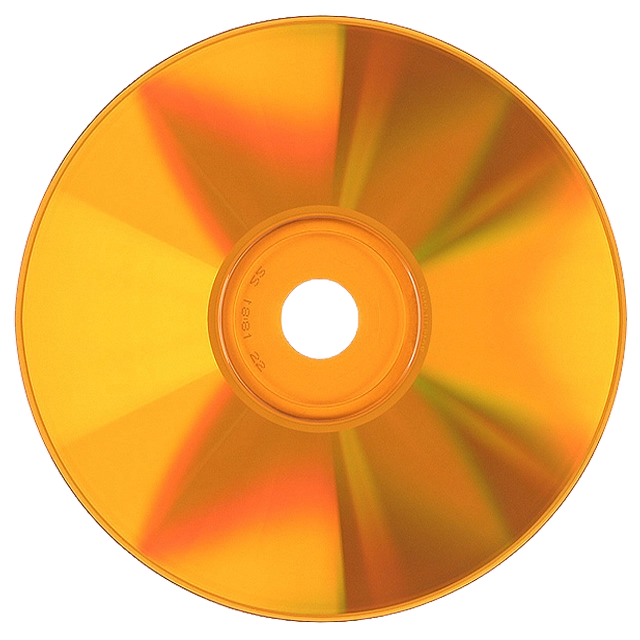

The timeline of

U.S. Recorded Music Revenue · 1973–2019 · RIAA Data
Scroll to explore
Every decade brought a new way to listen to music. Each format promised better sound, more convenience, or both until the next one came out. You can Hover over a format to see more about them.
In 1983 the CD had 0.5% of the U.S. market. By 2002 it owned 98% of physical music revenue. Then services like Napster, iTunes, and Spotify overtook it in around a decade. Drag to scrub through time.
Bar Graph of Market Share by Format, Scrub Through Time
CDs launched in 1983 at $21.50 per disc, which was wildly expensive. People bought them anyway, but over two decades we can see why streaming took over. Even if the price of a CD fell over time, it was hard to beat a $10 subscription a month price streaming gives you, while also giving you an entire library of music. You can scrub to see what that money was worth in today's dollars.
Year
1983
selected year
Avg. CD Price
$21.50
at time of sale
In 2024 dollars
$55.19
inflation-adjusted
Units Sold
0.8M
shipped that year
Line Graph of Average CD Price per Unit. Nominal vs. Inflation-Adjusted
Streaming compresses audio by throwing data away. Premium streaming at 320 kbps keeps less than a quarter of what a CD stores. Each dot below represents a unit of audio data, see what gets discarded.
Every dot is audio data. The dimmmer dots are what streaming discards
Streaming might have won the mainstream. But something surprising is happening: physical media has recently been growing again. Vinyl has been recently getting increasing amounts of sales from all types of people. This means the CD may not be dead. With its high audio quality features, it might only be a little while longer until they make a come back too.
thank you for scrolling, built with love by hanish vadlamudi